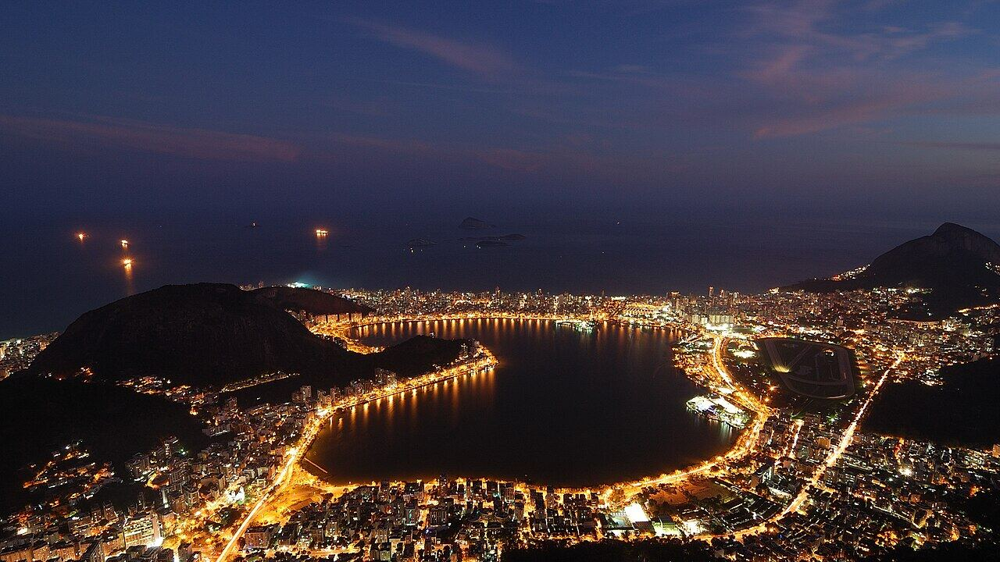
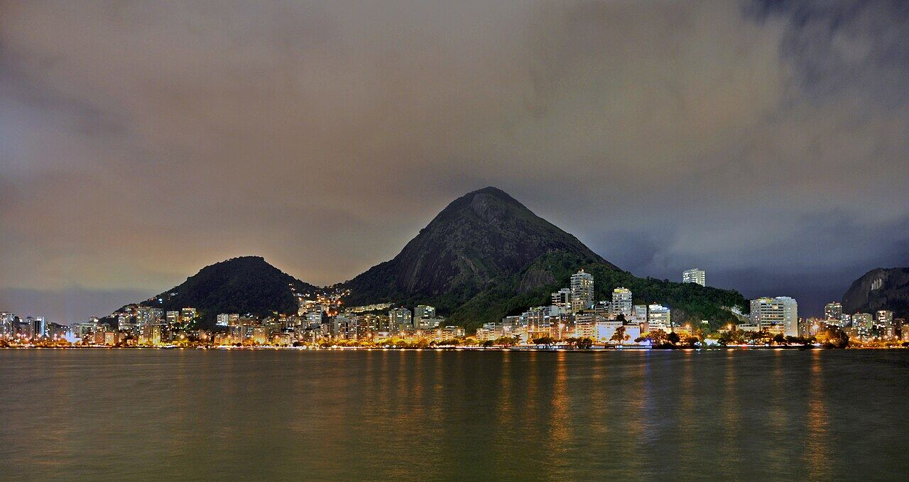
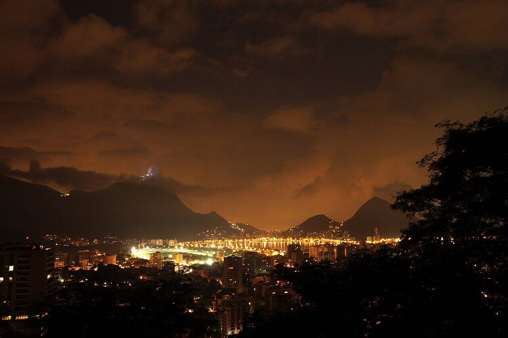

Quiosques da Lagoa Rodrigo de Freitas
Lagoa
Jantar ao ar livre com o espelho d'água iluminado.
Nosso comentário
Os quiosques da Lagoa têm cozinhas variadas e mesas ao ar livre à beira d'água. À noite, com o Cristo iluminado ao fundo e o reflexo das luzes na água, o clima fica muito agradável.
Dicas
- Escolham o quiosque pelo cardápio; há opções de vários estilos.
- Bom para uma noite tranquila.
Combina com
- Bar Lagoa de noite
- Parque da Catacumba de dia
Fotos do lugar



